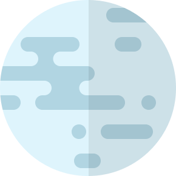

mercury
Mercury is the smallest planet in the Solar System and the closest to the Sun. Its orbit around the Sun takes 87.97 Earth days, the shortest of all the Sun's planets. Mercury is one of four terrestrial planets in the Solar System, and is a rocky body like Earth.
Source :
Wikipedia